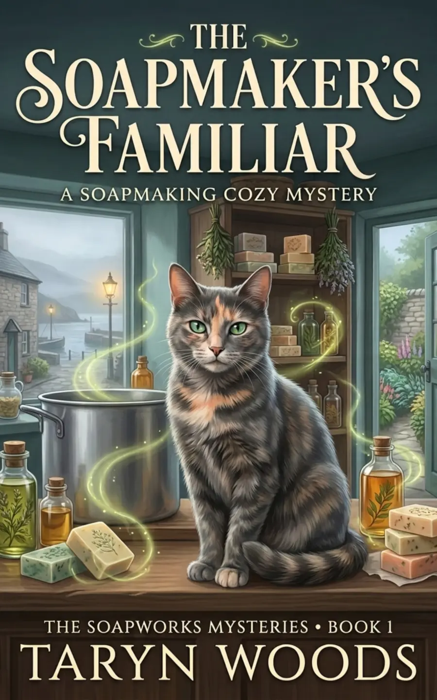
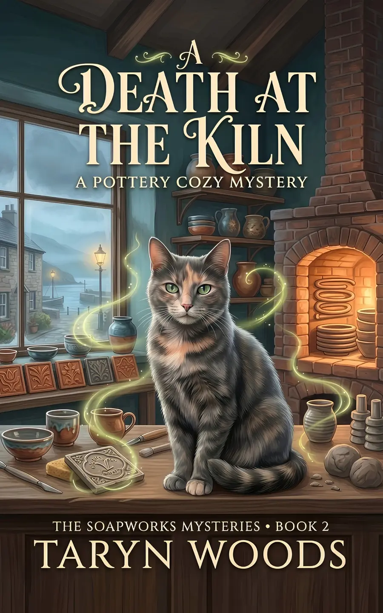
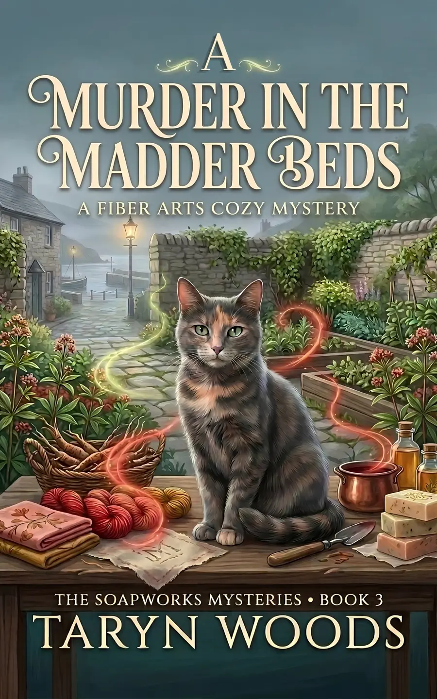
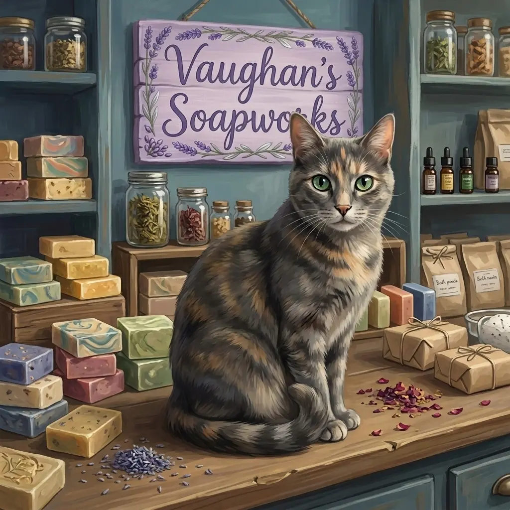

Book 1 · Preorder
The Soapmaker’s Familiar
A new beginning at an old soapworks leads Elaine to craft magic, a talking cat, and murder.
PreorderWelcome to Trefalen
Step inside a historic Welsh soapworks, where artisan clues linger in old tools, village secrets refuse to stay buried, and a talking tortoiseshell has absolutely no respect for police procedure.

The Soapworks Mysteries · Book 1
Available for PreorderShe came to Wales looking for her ancestry. She found a new home, an old murder—and a cat who could talk.
American master soapmaker Elaine Bellamy travels to the coastal Welsh village of Trefalen and discovers Vaughan’s Soapworks, a walled botanical garden, traces of old craft magic, and Misty—a green-eyed tortoiseshell with strong opinions she expresses out loud.
Five mysteries. One opinionated familiar.
Fair-play puzzles, authentic artisan detail, gentle paranormal magic, found family, slow-burning romance, and a talking tortoiseshell with plenty of tortitude.
Book 1 · Preorder
A new beginning at an old soapworks leads Elaine to craft magic, a talking cat, and murder.
Preorder
Book 2 · Preorder
Her cat can talk. The jackdaw repeats secrets. Unfortunately, neither makes a reliable witness to murder.
Preorder
Book 3 · Currently Writing
Another carefully crafted mystery is growing in Trefalen’s botanical garden.
Sneak PeekMeet the author
Taryn Woods writes clean cozy mysteries starring Misty, a talking tortoiseshell inspired by her real-life cat. When she isn’t writing, she can often be found walking beneath Louisiana live oaks, making soap, cooking soup and biscuits, or reading in her pajamas with a cat nearby.
About Taryn & Misty